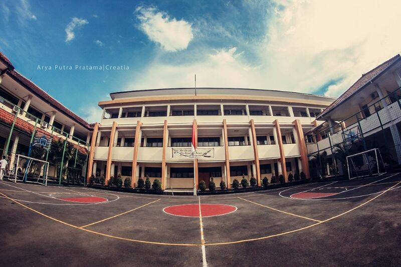

PENDIDIKAN
Dulu sewaktu ku SMP, aku ingin sekali belajar di sekolah yang besar, terkenal, dan orang orang pintar yang berada didalam sekolah tersebut.
Dan akhirnya aku diperkenalkan oleh kakakku sekolah SMK-SMAK Bogor.
Kakakku berkata bahwa ini merupakan sekolah yang mendominankan ilmu tentang kimia.
Aku mendengarnya saja sudah males, kenapa? Karena aku sangat tidak suka dengan pelajaran tersebut.
Tidak terbayangkan olehku untuk masuk sekolah ini.

Tetapi akhirnya aku mencoba untuk melanjutkan ke sekolah ini. Kenapa?
Sebab aku diberi motivasi oleh kakakku dan bapakku.
Kakaku berkata , jika keluar dari sekolah ini terjamin kerjanya.
Nah oleh sebab itu aku pun tertarik. Akhirnya aku mencari informasi mengenai sekolah ini.
Dan memang sudah takdirnya, aku pun diterima di sekolah ini.
Aku menjalankan kehidupan di SMK - SMKA Bogor ini sangat berbanding terbalik dengan kehidupanku yang dahulu.
Disini aku sering remedial dan melihat teman teman yang berjuang keras mengghadapi remedial ini. Banyak kakak kelas yang berkata padaku bahwa anak SMAKBO itu tidurnya sedikit, mainnya sedikit, dan banyak sekali yang beramsusi aneh aneh tentang SMAKBO.
Dan ternyata benar, aku sudah merasakan semua yang dikatakan kakak kelas. Sekarang ini aku jarang tidur dan untuk main pun aku tidak ada waktu. Aku menjadi malas belajar ini dan itu.
Sekian kisah singkat pendidikan yang telah ku tempuh akhir akhir ini. Semoga bermanfaat bagi kalian semua.
selamat membaca ^_^
my profile